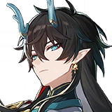
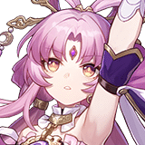

Pull Value
!!! REMINDER !!!
These rankings are extremely subjective, they are all just my opinions. I'm not trying tell people who to get or not to get. If you like a character go for them.
The point of this is just to share my opinion on these characters strengths in gameplay.
Heres my rankings of all the limited 5* characters in a table:
| Tier 0 | |
|---|---|
| Tier 1 |  |
| Tier 2 |

|
| Tier 3 | |
| Sustains |  |
Now I'm going to very briefly explain the logic why I put the characters where they are:
Tier 0: Borderline Must Pull Characters
These are the characters that no matter who else you have on your account, they will always be useful. Picking them up when they are on banner is a very good idea. Thankfully though, we don't have that many of these characters.
Ruan Mei ( Ice | Harmony ):
Pros:
- Provides the first-ever instance of Break Efficiency
- Rare RES PEN buff for the whole team
- Permanent teamwide SPD buff
- Near permanent uptime on all buffs
- Incredible damage contribution
- Universally applicable buffs
- The best buffer for dual-dps teams (especially DoT teams with Kafka)
- Strong defensive utility with increased Breaking
Cons:
- Delaying enemies may not be ideal for certain characters
- The Break Damage can 'kill steal' which isn't that great for damage dealers that rely on last-hitting enemies (like Seele)
Sparkle ( Quantum | Harmony ):
Pros:
- Absurd offensive buffs
- Can accelerate a single character significantly with her 50% Action Advance
- Completely SP positive despite her frequent Skill usage thanks to her Ultimate
- Extreme SP generation makes her easy to slot anywhere
- Will always be useful
Cons:
- Requires significant investment for maximum returns
- SPD tuning is inescapable if you plan to play the -1 Speed Sparkle and good gear is required if you want to play Hyperspeed Sparkle (160+ Speed)
Tier 1: Very Good Characters
These characters have a bit more noticable drawbacks, but still perform really well, and can clear endgame content consistently.
Acheron ( Lightning | Nihility ):
Pros:
- Unparalleled damage output
- Deals full damage to both single-targets and in AoE blending the benefits of Erudition and Hunt together
- Possibly the most absurd self-buffs in the game giving a permanent 1.6x separate DMG multiplier with 2 Nihility teammates and 90% DMG for free during her Ultimate
- Ignores Weakness Types and 20% RES during Ultimate making her highly universal
- Doesn’t want or need the most coveted Harmony supports freeing them up for others to use
Cons:
- Needs to be paired with 2 other Nihility characters for maximum effect from her A4 which low-level and free-to-play players may not own yet
- Very limited free Light Cone options and her Signature is a big boost
Jingliu ( Ice | Destruction ):
Pros:
- Extremely competitive damage output
- Low SP expenditure makes her extraordinarily flexible
- Acts very frequently due to her own 100% Turn Advance
- Absurd amount of free and powerful stats
Cons:
- Requires knowledge and awareness of when to use Ultimate or you can lose out on Enhanced Skill uses
- Turn Advance plays poorly with buffs causing them to run out sooner which can lead to uptime issues
Boothill ( Physical | Hunt ):
Pros:
- Outstanding single-target DPS
- Extreme amounts of Toughness damage every single Action
- Can Implant Physical Weakness onto enemies with his Ultimate and Technique making him more universal
- More SP efficient than most DPS characters
- Single-target limitation is less impactful since he's clearing adds in singular turns
Cons:
- The only good Light Cone alternatives to his Sig have huge asterisks next to them
- Quite literally useless against enemies that can lock their Toughness bars
- Hugely Ultimate-reliant if trying to brute force content with him
Robin ( Physical | Harmony ):
Pros:
- Top-tier offensive buffs
- Toppest tier buffs for follow-up attackers
- Has teamwide 100% Action Advance on her Ultimate
- Contributes extremely substantial personal damage
- Very easy to build
Cons:
- Very high Ultimate cost at 160
- Energy regeneration can be wildly inconsistent
- Need galaxybrain to always fully benefit from teamwide Action Advance
Dan Heng Imbibitor Lunae ( Imaginary | Destruction ):
Pros:
- Incredibly high damage and burst potential
- Great single target and Blast AoE
- Excellent base stats
- Minor Traces make hitting breakpoints easier
Cons:
- Extremely high skill ceiling making him hard to maximise
- All-in playstyle is extremely selfish and Skill Point hungry thus limiting team options
Kafka ( Lightning | Nihility ):
Pros:
- Strong single target and AoE damage, making her very versatile
- Consistent damage output due to DoTs (Damage Over Time)
- Can force proc DoTs on enemies to frontload damage
- Doesn’t care about CRIT stats at all
Cons:
- Extremely high investment required for both her and her teammates
- Wants potentially unreasonable amounts of SPD
Tier 2: Good Characters
These are the characters that are more focused in certain areas, meaning they are less universal. Still, this does not mean they are bad in any way shape or form.
Silver Wolf ( Quantum | Nihility ):
Pros:
- Ridiculous debuffs that can hugely amplify damage
- Rare debuffs to enemy ATK and SPD
- Can give enemies new Weaknesses
Cons:
- Potentially SP hungry if unlucky
- Requires investment for improved consistency
- Her debuffs are single target only
Black Swan ( Wind | Nihility ):
Pros:
- Absurdly high damage
- Extremely flexible unit
- AoE DEF Shred and DEF ignore on DoT
- High synergy with other DoT units
Cons:
- Easily one of the most complex units in the game with a steep learning curve
- Has one of the highest investment floors of any character
- Ironically her damage is almost too high for anything outside of the end game, sometimes preventing her DoT from spreading if the enemy dies too fast
Seele ( Quantum | Hunt ):
Pros:
- Works astonishingly well in AoE scenarios due to the nature of her kit, making her a rare universal DPS
- Quantum RES PEN allows her to be used effectively even outside of QUA weak foes
- Decent single-target damage output
Cons:
- Potentially very skill-point-hungry if she’s too fast
- While her single target damage is decent, for a Hunt character it is a little on the lower side
- The first limited character released, so somewhat likely that she will not age too well
Topaz ( Fire | Hunt ):
Pros:
- Best-in-Slot support option for follow-up teams
- Rare powerful damage multiplier that is likely to only improve over time
- Huge amounts of Toughness damage
- Very SP flexible and efficient
- Great personal damage, especially when paired with follow-up chars
Cons:
- Worse than other existing support options for non follow-up teams
- Personal damage output suffers tremendously without follow-up chars
- Exclusively single-target damage which limits potency in AoE
- Extremely heavy investment required in both Traces and Relics
Dr. Ratio ( Imaginary | Hunt ):
Pros:
- Absolute highest single-target damage ceiling in the game when ramped up
- Follow-ups give absurd amounts of Toughness damage and great Energy economy
- Stat monster that can reach ridiculous CRIT values
- Many powerful relic options to choose from
Cons:
- Needs ramp-up time to reach his potential
- Requires at least 3 debuffs on targets for consistent follow-ups
- Outside of his slight multi-target capabilities when killing enemies, he’s still ultimately a single-target unit
Tier 3: Decent Characters
While these characters are the lowest in the ranking(outside of Sustains), bare in mind that even these characters can perform amazingly, but their floor is a lot higher compared to others.
Blade ( Wind | Destruction ):
Pros:
- Excellent self-sustain
- HP scaling means massive HP values for an overall damage gain
- Very low SP consumption
- Excellent damage output in all scenarios
Cons:
- His best teammates are mostly limited characters
- While he can heal himself decently well, you need to pair a strong healer with him to keep him alive at all times
- Requires a lot of investment for safety
- Does not benefit from outside ATK increases due to HP scaling which limits the Harmony units that can support him
Argenti ( Physical | Erudition ):
Pros:
- Strongest AoE damage potential in the game while still having good single-target output
- Two Ultimates gives the player more choice — you can use the cheaper Ultimate in a pinch to finish off a wave
- His kit makes him increasingly stronger based on the number of enemies on the field
- Compared to many other limited damage dealers, his Eidolons aren't that good and he's already strong at E0
Cons:
- His kit is pretty simple as he just uses a big stick to bonk enemies, which may be a con for some
- His stronger Ultimate has the absolute highest cost in the game
- His damage output noticeably drops on turns where he doesn't have his Ultimate, since a majority of his damage comes from it
- Huohuo is his best sustain partner and significantly improves his performance
Jing Yuan ( Lightning | Erudition ):
Pros:
- Great AoE damage combined with decent single-target damage
- Great at Breaking as each Lightning Lord attack is treated as separate damage instance
- A freaking Stand
Cons:
- Backloaded damage
- Crowd Control - if Jing Yuan gets CCed, Lightning Lord will lose its turn which is a massive damage loss
- 130 Ultimate cost means you will need to get 5 energy from somewhere if you want to use his Ultimate every 4 turns - 30 x 4 (from using Skill) + 5 from using Ultimate = 125
Sustains
The reason sustain characters got a separate tier is because its really hard to rate them. On one hand, all of them would be Tier based on their kits, because all 4 of these characters kits are overloaded. On the other hand though, all endgame gamemodes require you to have two invested teams in order to clear, meaning you need two sustains. After getting 2 sustains, a 3rds value drops significantly, as you already have characters that fill that role.
Aventurine ( Imaginary | Preservation ):
Pros:
- Excellent and consistent shielding
- Strong team resistance to Crowd Control and debuffs
- Very SP positive and flexible
- Strong debuff on his Ultimate
- Best-in-slot sustain for follow-up teams
Cons:
- Strong debuff is single-target only
- Wants to get hit to speed up getting his follow-up but has no way to taunt enemies
Huo Huo ( Wind | Abundance ):
Pros:
- Great healing and sustain
- Extremely frequent debuff dispels
- Has an ATK buff as a sustain character
- Can also regenerate Energy for other allies
Cons:
- Notably more effort to use compared to other top sustains
- High Energy cost Ultimate reduces uptime on buffs
- Cannot be fully SP-positive without greatly hindering Ultimate uptime
Fu Xuan ( Quantum | Preservation ):
Pros:
- Significant teamwide damage mitigation
- Extremely durable with very high HP
- Provides Max HP and CRIT Rate bonuses passively with her Skill
- Provides Crowd Control immunity with each Skill usage
- Unlikely to be powercrept any time soon
Cons:
- Team healing can be insufficient if she is not well invested
- Not fully SP positive like other supports in her slot
Luocha ( Imaginary | Abundance ):
Pros:
- Excellent healing throughput that is comfy and easy to maintain
- AoE dispel on his Ultimate to remove enemy buffs
- Virtually immune to crowd-control
- Excellent SP economy
- Will always be good at doing his job of sustaining the team
Cons:
- Doesn't do anything more than sustain the team making his offensive utility lower than newer sustain characters
- Doesn't have a panic heal in his kit
- ATK scaling means he will have less HP than other HP-scaling healers